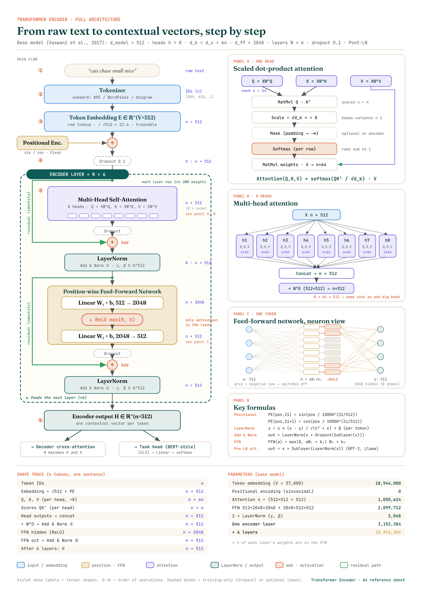
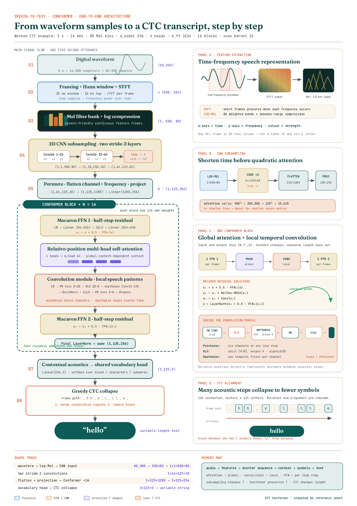
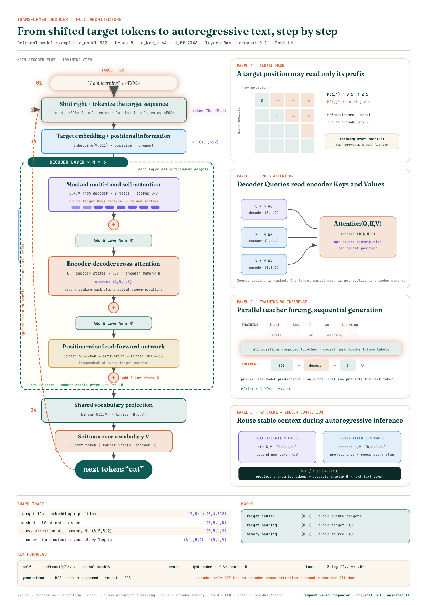
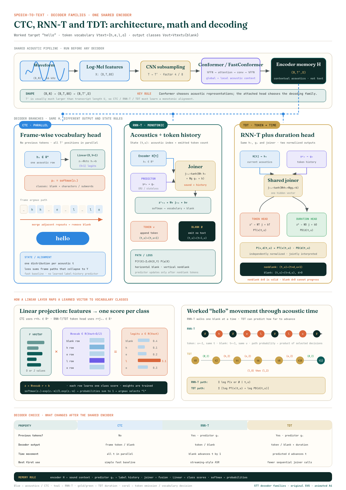
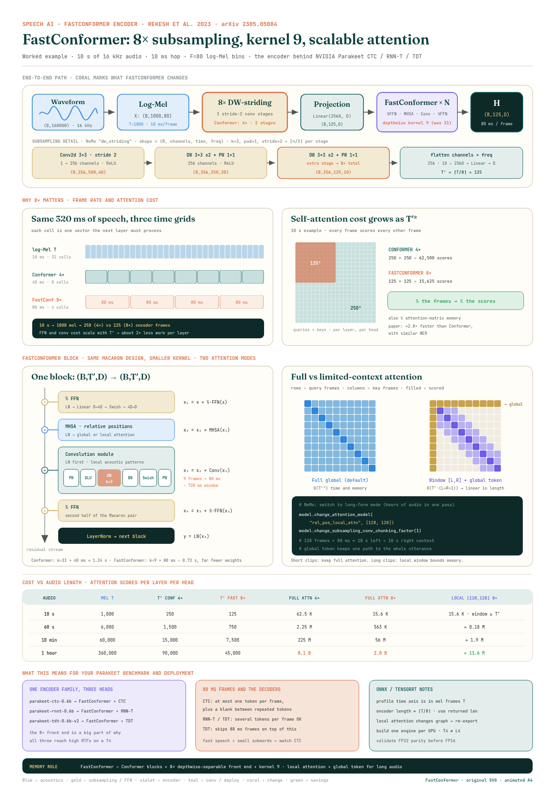
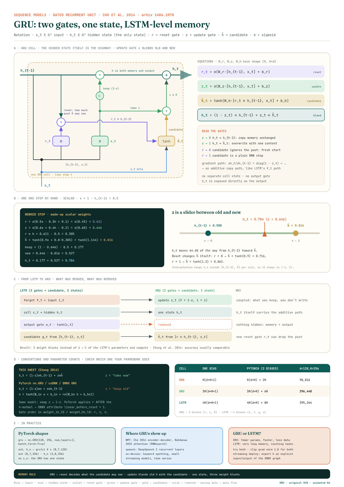
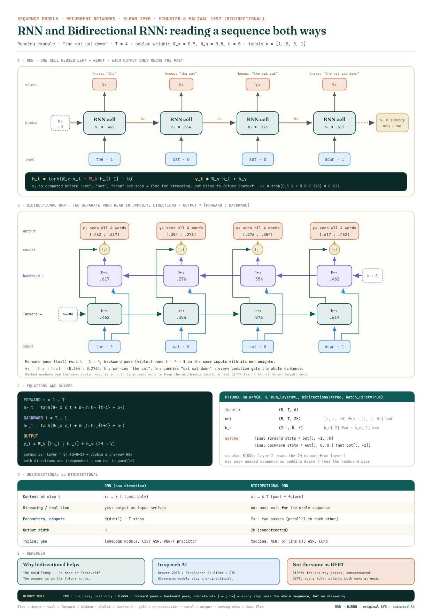
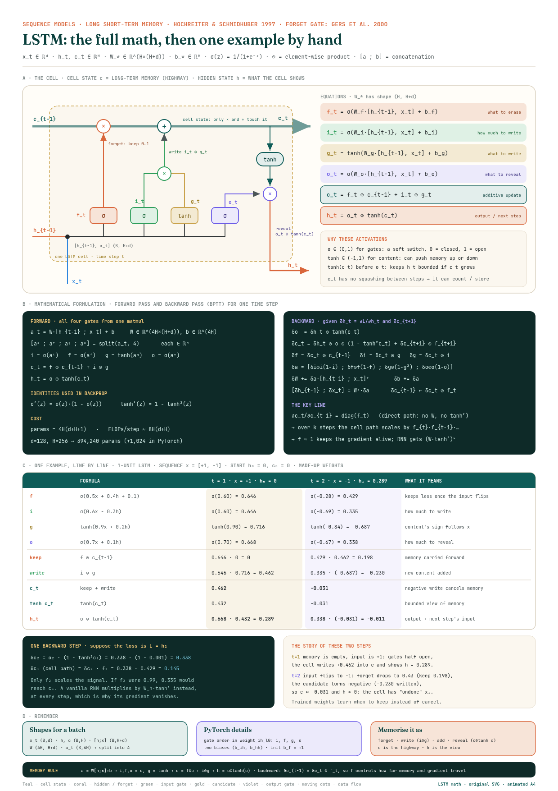

Transformer · Reference 01
Encoder Architecture
Tokenization, embeddings, attention, residuals, feed-forward layers, formulas, shapes and parameter counts on one page.
A4 portraitAnimatedPrint-safe
Eleven visual, interactive deep-dives plus an interview-prep deck — from perceptrons to speech encoders — built to be felt, not just read.
New here? Follow the five stages in order, one task at a time. Each task links to what to open and tells you exactly when you're done. Your ticks are saved in this browser.
Open the blog and read it top to bottom once. Don't take notes yet.
Drive every slider and step-through. Predict the result before you click.
Open the A4 sheet. Redraw its main diagram on paper from memory.
Read the task's "done when" line. Can you do it aloud? Then tick it.
How a network computes, learns and stays trainable.
0 / 4Done when you can explain a neuron (w·x + b → activation), a layer, and why stacking linear layers without an activation is useless.
Done when you can do the chain rule for one neuron on paper and say what the forward pass must cache.
Done when you can say why ReLU replaced sigmoid in deep nets, and what GELU and Swish change.
Done when you can contrast BatchNorm and LayerNorm in one sentence each and explain why residual connections help gradients.
Networks with memory: the bridge from feed-forward nets to Transformers.
0 / 4Done when you can write h_t = tanh(W_xh·x_t + W_hh·h_(t−1) + b), unroll it for 3 steps, and explain why gradients vanish.
Done when you can draw forward + backward layers with the [h→ ; h←] concat, and say why a BiRNN can't stream.
Done when you can write all 6 LSTM equations from memory and redo the 2-step example on the sheet without looking.
Done when you can map LSTM gates to GRU gates and give both parameter counts: 4H(d+H+1) and 3H(d+H+1).
Attention replaces recurrence: parallel training, direct paths between tokens.
0 / 4Done when you can explain why attention needs position information, and how sinusoidal and RoPE encodings differ.
Done when you can compute softmax(QKᵀ/√d_k)·V for a 3-token toy example and explain the √d_k.
Done when you can trace the tensor shapes through one encoder layer and count its parameters roughly.
Done when you can explain the causal mask, cross-attention and the KV cache.
Put it together: audio in, text out.
0 / 4Done when you have worked through the waveform → log-Mel → encoder → CTC tasks and their notebooks.
Done when you can give the shape trace from (B, 160000) samples to (B, T′, V) logits.
Done when you can explain the blank token, the LSTM prediction network and the joiner, and how TDT skips frames.
Done when you can list what FastConformer changes: 8× subsampling, kernel 9, local attention for long audio.
Turn understanding into clear, timed answers.
0 / 3Done when you score at least 12 / 15 on the quiz, twice in a row.
Done when you can answer each in about a minute before opening the model answer.
Done when you can answer every question in § 06 aloud, then draw one diagram (an LSTM cell or an encoder layer) from memory.
Bonus, after Stage 4: deploying models with ONNX, TensorRT and Triton is covered in the learning folder (learing/model_inference_deployment_universal_learning_path.md). Open it in VS Code's Markdown preview. Its interview questions are in § 06 under "Deployment".
Every concept is self-contained. Dive in order, or jump to what you need.
From perceptron to deep networks — how machines learn to think in lines and curves. A full visual journey from zero to expert.
A visual derivation of the gradient algorithm. Watch errors flow backwards through the network and weights update in real time.
The bend in the wire that makes deep learning possible. ReLU, GELU, Sigmoid, Swish and more — explored with live function plots.
BatchNorm, LayerNorm, RMSNorm — understand the difference by feeling it. Side-by-side comparisons with live distributions.
Teaching attention to count. Where am I? — sine waves, learned embeddings, and rotary encodings explained with animated heatmaps.
Made visual. Q, K, V matrices, attention scores, and scaled dot-product attention — a coded, step-by-step animated walkthrough.
Watch a sentence flow through the full encoder pipeline. Embedding → Attention → FFN — the complete transformer architecture, animated.
Test yourself on everything above. 43 flip-cards, a 15-question quiz with explanations, whiteboard drills, and a searchable question bank.
The whole encoder on one printable page: main flow with every tensor shape, attention and multi-head panels, the FFN neuron view, key formulas, and shape and parameter tables.
A visual Tasks 0–14 curriculum with notebook downloads: waveform, STFT, log-Mel, CNN subsampling, Conformer, vocabulary heads, CTC decoding and the final project.
Networks that remember. The recurrent cell, unrolling step by step, a live memory explorer, backprop through time and why gradients vanish, plus PyTorch shapes.
The cell-state highway and the forget, input and output gates, worked by hand. Includes a live gate lab, an RNN-vs-LSTM memory race, GRU, and LSTMs in RNN-T speech models.
Reset and update gates, one hidden state, LSTM-level memory at ¾ the cost. A worked step, a live gate lab, GRU vs LSTM part by part, and the paper-vs-PyTorch conventions.
Dense architecture maps for revision, printing, or a second-screen walkthrough. Motion runs on screen; the printed sheet stays clean.

Tokenization, embeddings, attention, residuals, feed-forward layers, formulas, shapes and parameter counts on one page.

Waveform, STFT, log-Mel, CNN subsampling, every Conformer submodule, vocabulary projection and CTC collapse with a complete shape trace.

Shifted targets, causal masking, masked self-attention, encoder cross-attention, FFN residuals, training versus inference, vocabulary output and KV caching.

One shared Conformer pipeline branching into three decoder families, with predictor/joiner math, token-duration transitions and Linear-to-vocabulary mapping.

8× depthwise-separable subsampling, the kernel-9 Macaron block, frame-rate and attention-cost comparisons, local attention with a global token, and Parakeet deployment notes.

The GRU cell with reset and update gates, a worked step, the update gate as a slider between old and new, the LSTM-to-GRU mapping, PyTorch conventions and parameter counts.

"the cat sat down" unrolled through an RNN and a bidirectional RNN, with animated data flow, worked forward and backward states, concatenated outputs, PyTorch shapes and a unidirectional-vs-bidirectional table.

The animated LSTM cell, the stacked-matrix forward pass, the BPTT backward equations, and a two-step example worked line by line with a backward step through the cell state.
Animated ML concepts drawn as lightweight inline SVG studies, including the new speech-feature pipeline.
SVG animations · always on · no external dependencies
The ten questions interviewers ask most about Transformers. Answer each one out loud in about a minute, then open the model answer to compare.
"The input is X of shape n × 512. First, multi-head self-attention: 8 heads each project to 64-dim Q, K and V, compute softmax(QKᵀ/√64)·V giving n × 64 per head, then concatenate back to n × 512 and multiply by WO. Then a residual add and LayerNorm. Then the feed-forward network, applied to each token separately: 512 → 2048 with ReLU → 512. Another residual add and LayerNorm. The output is still n × 512, which is why we can stack 6 of these layers."
X (n×512) → MHA (8 × n×64 → concat n×512 → W_O) → +X → LN
→ FFN (n×2048 → ReLU → n×512) → + → LN → out (n×512)
Bonus detail: about 3.15M parameters per layer, with attention ≈ 1.05M and FFN ≈ 2.1M. · Go deeper →
"A score is a dot product of dₖ terms. If each term has variance about 1, the score has variance dₖ, so the scores grow with head size. Large scores make the softmax nearly one-hot, and then its gradients are almost zero and training stalls. Dividing by √dₖ brings the variance back to about 1 for any head size. With dₖ = 64 we divide by 8."
Var(q·k) = d_k → Var(q·k / √d_k) = 1
Follow-up: why not divide by dₖ? That over-shrinks the scores, so the softmax becomes nearly uniform and attention can't focus. · Go deeper →
"One head gives each token a single softmax, so all its relationships get averaged into one blend, and they compete because the weights sum to 1. With multiple heads, each has its own WQ, WK and WV and can specialize: one tracks what 'it' refers to, another tracks syntax, another tracks neighbors. WO then mixes them. Because dₖ = d_model / h, 8 heads × 64 dims cost about the same as one 512-dim head, so we get several views for the same compute."
Follow-ups: WO lets the heads mix. MQA/GQA share K/V across heads to shrink the KV cache. · Go deeper →
"Self-attention is permutation-equivariant: shuffle the input and the output just shuffles, so 'dog bites man' and 'man bites dog' look the same. We have to inject order. Sinusoidal (the original paper) adds fixed sin/cos waves of different frequencies. It has no parameters, and any offset is a rotation, so relative position is easy to learn. Learned (BERT, GPT-2) is a trainable table, simple but with a hard maximum length. RoPE (Llama) rotates Q and K by an angle proportional to position, so the attention score depends only on the relative distance m − n, and it can be stretched to longer contexts."
PE(pos,2i) = sin(pos/10000^(2i/d)) PE(pos,2i+1) = cos(pos/10000^(2i/d))
Also worth naming: ALiBi (a linear distance penalty on the scores, extrapolates well). · Go deeper →
"BatchNorm normalizes each feature across the batch, so it depends on other examples and needs running statistics at inference. LayerNorm normalizes each token across its own features, so it works with batch size 1, variable lengths and one-token-at-a-time generation. That's why Transformers use it. Post-LN, the original, is LN(x + F(x)): the norm sits on the residual path, which makes deep stacks fragile and warmup essential. Pre-LN, used in GPT-2 and Llama, is x + F(LN(x)): the residual stream stays clean, training is much more stable, and you add one final LayerNorm at the end."
Bonus: LLMs often use RMSNorm, which has no mean and no β, so it's cheaper. · Go deeper →
"Each sublayer computes x + F(x) instead of F(x), so it only has to learn a correction. More importantly, the derivative is I + ∂F/∂x. That identity term gives the gradient a direct highway from the loss to the first layer, so it doesn't vanish through many layers. That's what lets us stack 6 layers, or 80+ in LLMs. It also requires every sublayer to keep the same shape, which is why attention ends with WO and the FFN projects back to 512."
"Attention mixes information between tokens. The FFN processes each token on its own, with the same two-layer MLP at every position: max(0, xW₁+b₁)W₂+b₂, going 512 → 2048 → 512. The 4× wider hidden layer gives more capacity, roughly 2048 pattern detectors per token. It's where most of each layer's parameters live, about two-thirds, and it's the only place with an activation function. Without the ReLU, the two linear layers would collapse into one. Projecting back to 512 keeps the shape for the residual add."
Modern variants: GELU (BERT, GPT), SwiGLU (Llama) with about ⅔·4d hidden to keep the parameter count. · Go deeper →
"Both are bottom-up subword methods: start from characters and keep merging pairs until the vocabulary reaches the target size. BPE merges the pair that occurs most often. WordPiece, used by BERT, merges the pair with the highest likelihood score, count(ab) / (count(a)·count(b)), so it prefers pairs that occur together more than chance. WordPiece marks word continuations with ## and encodes greedily, longest match first. GPT models use byte-level BPE, which starts from 256 bytes so it never produces [UNK]."
"unhappily" → BPE: ["un", "happ", "ily"] WordPiece: ["un", "##hap", "##pi", "##ly"]
Also name Unigram (T5): it works top-down, starting large and pruning. SentencePiece is the toolkit that runs BPE or Unigram on raw text. · Go deeper →
"Feature extraction freezes the pretrained encoder and trains only a small head. It's cheap, but the representations stay general-purpose. On Banking77 with DistilBERT, training only 650k of 67M parameters (about 1%), I got 85.3% accuracy. Full fine-tuning updates every weight at a small learning rate (5e-5 with warmup). The encoder adapts to banking intents, and I got 90.1% accuracy, 90.1% macro-F1: about 5 points better, at roughly 100× more trainable parameters. The learning rate has to stay small (2e-5 to 5e-5, with warmup). Much higher rates wreck the pretrained weights. LoRA sits in between: freeze W and train small low-rank adapters W + BA, so you train under 1% of the parameters and get close to full fine-tuning quality. That's the go-to for large models or many tasks on one GPU."
| Method | Trains | Cost | Quality |
|---|---|---|---|
| Feature extraction | head only | lowest | OK |
| LoRA | small adapters (<1%) | low | close to full |
| Full fine-tune | everything | highest | best |
Fill in the blanks from your Colab Task 12 results table. Real numbers make this answer convincing.
"Problem: map each caller utterance to an intent so the bot takes the right action. Data: I prototyped on Banking77, 77 intents, and for production I'd collect real ASR transcripts, because voice input is noisy, code-mixed and often Romanized Hindi. Model: an encoder with a classification head on [CLS], since we need understanding rather than generation, and encoders are small and fast enough for real-time calls. Baseline vs fine-tune: the frozen encoder gave 85.3% and full fine-tuning gave 90.1% accuracy / 90.1% macro-F1. The hardest intents were near-duplicates like virtual_card_not_working and why_verify_identity (F1 ≈ 0.7). I also saw keyword bias: "I lost my card, please block it" went to pin_blocked instead of lost_or_stolen_card because of the word "block". Hinglish: DistilBERT splits the Hindi sentence "मेरा कार्ड खो गया" into 12 tokens, while MuRIL needs just 4. But a multilingual tokenizer alone wasn't enough: MuRIL fine-tuned on English-only data for 3 epochs reached only 48% and was near-random on Hinglish test sentences. So the real fix is Hinglish training data plus proper tuning. Evaluation: macro-F1 rather than plain accuracy, plus error analysis on confusable intents. Production: a confidence threshold that falls back to a clarifying question or a human, latency checks (distillation if needed), and continuously adding misclassified calls to the training set."
ASR text → normalize → multilingual encoder → [CLS] head → intent + confidence
└─ low → ask again / human handoff
This is your strongest answer because you built it yourself. Use the 8-part story in Interview Prep §6 →
The questions interviewers ask about each stage of the path. Finish a stage, then answer its questions out loud before you open the model answer.
A neuron computes z = w·x + b and then a = φ(z). Without φ, two layers are W₂(W₁x) = (W₂W₁)x, which is still one linear map. Depth would add nothing, and the network couldn't learn XOR or any curved boundary. The non-linearity is what lets stacked layers build richer functions.
Name one: ReLU max(0, z).
The forward pass computes each layer's output and caches the activations. The loss compares the prediction to the target. The backward pass applies the chain rule from the output back to the input: each layer's error is δ = (Wᵀ·δ_next) ⊙ φ′(z), and its weight gradient is δ·aᵀ using the cached input. Then the optimiser updates the weights. One backward pass costs about two forward passes.
Follow-up: why cache activations? The backward pass needs them to compute the weight gradients.
Sigmoid saturates, and its derivative is at most 0.25. Multiplied over many layers, gradients vanish. ReLU's derivative is exactly 1 for positive inputs, it's cheap, and it gives sparse activations. Its weakness is "dead" units stuck at 0, which Leaky ReLU, GELU and Swish soften.
Transformers mostly use GELU; Llama-style models use SwiGLU.
BatchNorm normalises each feature across the batch. It depends on batch statistics, needs running averages at inference, and suits CNNs. LayerNorm normalises across the features of one sample. It's batch-independent, works the same in training and inference, and suits variable-length sequences, which is why Transformers use it.
Bonus: RMSNorm drops the mean and β, so it's cheaper.
Training loss keeps falling while validation loss rises, so the gap grows. Fixes: more data or augmentation, dropout, weight decay, early stopping on validation loss, or a smaller model.
Always say which metric you'd watch: validation loss or WER/accuracy.
h_t = tanh(W_xh·x_t + W_hh·h_(t−1) + b). W_xh·x_t brings in the new input. W_hh·h_(t−1) brings in the memory. tanh keeps the state in (−1, 1). The same weights are reused at every step, so the parameter count, H(d+H+1), doesn't depend on sequence length.
Draw it unrolled for three steps while you talk.
Backprop through time multiplies one Jacobian per step: ∂h_T/∂h_1 = ∏ diag(1 − h_t²)·W_hh. If the largest singular value of that product is below 1, the gradient shrinks exponentially with distance (vanishing). Above 1, it blows up (exploding). Exploding gradients are fixed with gradient clipping. Vanishing gradients need an architecture change: LSTM or GRU.
Concrete: 0.9²⁰ ≈ 0.12, 0.9⁵⁰ ≈ 0.005.
It adds a cell state updated by addition: c_t = f ⊙ c_(t−1) + i ⊙ g. Along that path ∂c_t/∂c_(t−1) = diag(f_t), with no weight matrix and no tanh′. When the forget gate learns f ≈ 1, memory and gradient pass through many steps almost unchanged. Initialising the forget bias to +1 helps early training.
Then list the gates: forget, input, candidate, output, with h = o ⊙ tanh(c).
A GRU merges the forget and input gates into one update gate z, merges the cell and hidden state, and drops the output gate. That's 3 weight blocks instead of 4, so ¾ of the parameters (3H(d+H+1) vs 4H(d+H+1)). Accuracy is usually similar. Pick a GRU for speed or small data, and try both if accuracy matters.
Trap: PyTorch writes h = (1−z)⊙n + z⊙h, so its z means "keep old".
Whenever you must produce output before the sequence ends: streaming speech recognition, live captioning, or autoregressive generation. The backward pass needs the future. It's great offline (tagging, NER, offline CTC ASR), at 2× the cost and 2H output width.
PyTorch gotcha: the final backward state is out[:, 0, H:], not out[:, -1].
In RNN-T and TDT models the prediction network is usually a small LSTM over the previously emitted tokens. It runs once per emitted token, not per frame, and a blank output doesn't update its state. The joiner combines its output with the encoder frame to predict the next token or blank.
This is why the predictor is exported separately, with h and c as explicit inputs and outputs.
RNNs must process T steps one after another, so training can't be parallelised over time, and all history is squeezed through one fixed-size state. Self-attention connects any two positions in one step and trains all positions in parallel on GPUs. The price is O(T²) attention cost.
Mention: RNNs still win on constant memory per step for streaming.
The encoder uses bidirectional self-attention, so every token sees every token (BERT, speech encoders). The decoder uses a causal mask so token t sees only tokens ≤ t, plus cross-attention to the encoder in seq2seq models. GPT-style models are decoder-only, without cross-attention.
Draw the mask as a lower-triangular matrix.
During generation, the keys and values of past tokens don't change. The KV cache stores them, so each new token computes only its own q, k and v and attends to the cache, instead of recomputing the whole prefix. It makes decoding fast, but its memory grows with sequence length × layers × heads, which is what limits long-context serving.
MQA/GQA shrink it by sharing K/V across heads.
Time O(T²·d) and memory O(T²) per head, because every query scores every key. For long inputs: local or sliding-window attention, sparse patterns, or a few global tokens. FastConformer uses local attention plus a global token for long audio. FlashAttention cuts the memory traffic, not the O(T²) work.
Example: 10 s of audio at 40 ms frames → 250 frames → 62,500 scores per head.
16 kHz waveform → STFT with a 25 ms window and 10 ms hop → 80 log-Mel bins (100 frames/s) → convolutional subsampling (4× in Conformer, 8× in FastConformer) → encoder (Conformer layers) → a decoder head: CTC, RNN-T or TDT → tokens → text.
Give one shape: 10 s → (B, 1000, 80) features → (B, 125, D) after 8×.
The encoder outputs a distribution over vocabulary + blank for every frame. CTC training sums the probability of every frame-level alignment that collapses to the target. Decoding takes the best path, merges repeated tokens, then removes blanks. It assumes frames are conditionally independent, so it often benefits from an external language model.
Collapse example: "hh-e-ll-l-oo" → "hello".
RNN-T adds a prediction network (usually an LSTM over previous tokens) and a joiner. Each output is conditioned on what was already emitted, which removes CTC's independence assumption while staying streaming-friendly. TDT extends RNN-T by also predicting a duration, so it can skip several frames per step and decode faster.
Speech needs both global context (attention) and local patterns like formant transitions (convolution). A Conformer block is ½FFN → self-attention → convolution module → ½FFN → LayerNorm, the "macaron" layout. The convolution captures local structure that attention alone handles poorly.
ONNX is a file format: a portable graph of operators. ONNX Runtime is an engine that runs ONNX graphs on CPU or GPU through execution providers. TensorRT is NVIDIA's compiler: it fuses layers, picks kernels, uses lower precision, and produces a GPU-specific engine plan.
Serving layer on top: Triton Inference Server.
Run the same inputs through PyTorch and the exported model and compare outputs within a tolerance (for example atol 1e-3 for FP32). Test several input shapes if the axes are dynamic. Polygraphy can compare ONNX Runtime and TensorRT directly. Only then benchmark latency and throughput, and finally check task accuracy (WER) on a real test set.
Batching groups requests so the GPU does more useful work per launch, which raises throughput. Each request may wait for the batch to fill, which raises latency. Dynamic batching in Triton caps that wait with a small queue delay. Always report percentiles (p50, p95, p99), not just the mean.